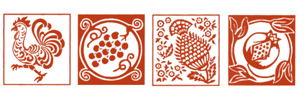

RUST PRINT
The origins of this art can be traced back to poor craftsmanship: wooden molds, colors obtained from rust, fabric made from hemp. The molds are made of pear wood because it is a soft wood. The printing is done by hand with the hand-engraved pear wood molds. Rust color prevails, but also blue, green and red are precious and required. For these colors are used mineral bases.
Procedure
Before printing the fabric, it is stretched through the mangano which is a machine used to make the fabric smoother. This process is called “follatura”. The fabric is wrapped around wooden rolls that are positioned under the rock. The wheel, moved by human energy, moves the rock that compacts the fabric, and thanks to its pressure the fabric will be softer and smoother. Even today before printing the fabric and after having printed it, the artisans proceed with this procedure.
Procedure: Dips the mold on the pad where the color has been spread, then with a steady hand it is applied on the fabric: the left hand firmly blocks the mold, while the right hand holds a sort of hammer (mazzuolo - 3 or 4 kilos) and hits the mold. And so on, to match the matrices, until the end of the decoration. The sheet is then placed to dry, then it’s immersed in a fixing bath with caustic soda, a time obtained with ash and boiling water,to make the color indelible and resistant over time to all types of washing. Finally, the cloth is washed to eliminate excess color and again lay out to dry.
Some steps of printing process
Video supplied by Antica stamperia Pascucci
Other explanatory videos:
Colors and decorations
Rust paste, in its components, and in relation to the proportions of its ingredients, is the secret of every printer, even if its basic composition is known. The main element is iron properly oxidized with wine vinegar in order to produce rust, to which is added iron sulfate bound with wheat flour. Other colors are generally blue and green in various shades.
The most classic designs are floral motifs (leaves, vine shoots, bunches of grapes, ears of corn, flowers, pomegranates...) and animal motifs (cocks, griffins, oxen, pheasants, birds...), although there is no lack of elements of everyday life and geometric shapes. Each printing works has its own patrimony of matrices, often made in the workshop by the owner himself; some have completely original drawings, others have similar subjects but different interpretations.
Originality
To recognize the originality it is necessary to check that the drawing and the colour of the print can also be read on the reverse side of the canvas; it is on the reverse side that the small inhomogeneity and imperfections due to the manual nature of the operation are most noticeable. A handmade print must have some slight displacements, due to the composition of the moulds, and even the repetition of the same design may have some difference between a print and the other. Attention is also paid to colour: the colour of industrial prints can be recognised because it is flat and uniform, while that printed by hand is necessarily subject to nuances and to an uneven distribution of colour. In short, every tablecloth, dishcloth, napkin is a real unique piece.
To protect the uniqueness and originality of this craft, in 1997 the Associazione Stampatori Tele Romagnole was founded, on the initiative of a group of artisans from Romagna. The Association is constituted by the union of the printing works that continue to use the traditional production process and wants to ensure compliance with this method, thus protecting us from counterfeiting and safeguarding the historic shops, which today are about ten. You can recognize the canvases produced by these printing works by the label, on which is represented the mark of the Association.
Shops and printers:
- Stamperia Bertozzi
- Stamperia F.lli Pascucci 1826
- Stamperia Braghittoni
- Stamperia Il guado
- Stamperia Miserocchi
- Stamperia C’era una Volta
- Stamperia Casadei
- Stamperia Ruggine
- Stamperia Peromatto
- Antica Stamperia Carpegna
Bibliography
- Milantoni G., Nicolini S., Pascucci S., (a cura di); Decorare ad arte: tele stampate in Romagna. Ravenna: Edizioni Essegi (1983).
- Bertozzi G.; Tele stampate a mano: una grande tradizione romagnola. Cesena: Associazione stampatori tele romagnole (2000).
- Spallicci A.; Tele stampate romagnole, in La Pié, n. 4-5 (1920-1929), p. 1-7.
- Spallicci A.; Tele stampate, in La Pié: rassegna di illustrazione romagnola, 1923.12, A. 4, n. 12 (dic. 1923), p. 264-266.
- Stanghellini A.; Tele stampate "Ruggine", in Rubiconia Accademia dei Filopatridi: Quaderno 10 (1970), p. 182-185.
- Pedrazzi A.;Le tele stampate a ruggine, in Ariminum: periodico bimestrale del Rotary Club Rimini, n. 2 (mar.-apr. 2008), p. 18-20.